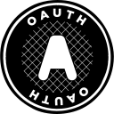

Programming languages
Python
Ruby
I build applications with C# and .NET.
I work on backends, databases and projects of my own.
Currently developing SNAKE OS.
Applications I’ve built and
personal projects still in development.
Serkan Yılancı
Software developer
I’m Serkan Yılancı, a backend-focused software developer based in Alanya, Türkiye. I graduated from Ondokuz Mayıs University with an associate degree in Computer Programming.
At Denizer Otomotiv, I built and maintained internal inventory and accounting applications with C#/.NET and MSSQL. My internships at Morphosium Yazılım and Global Media involved API integrations and backend development. I also worked in fleet tracking, procurement and inventory operations at TT Filo.
Outside of work, I develop my own projects: a warehouse inventory application, a modular ERP, an AI-assisted CV builder and a home automation assistant. One of my current projects is SNAKE OS, a mobile operating system I’m building from scratch.
The languages, frameworks and tools
I use across my work and personal projects.

OAuthSoftware development, internships
and hands-on operations experience.
Fleet tracking, procurement, inventory management and operational reporting.
Built and maintained internal inventory and accounting applications with C#/.NET and MSSQL. Automated repetitive tasks and worked with users to troubleshoot and improve the software.
Worked on API-driven features in microservice-based projects, data processing, debugging and performance improvements.
Built backend applications and external API integrations using JavaScript and asynchronous programming.
Get in touch about a project or a job opportunity.